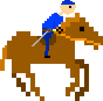

Tactics
Ever wondered what military tactics used during the Civil War? From barricading river mouths to the actual tactics used during the battle, tactics is what won the war!
https://htmlpreview.github.io/?
During war people used matchlocks then went behind lines to reload.
Artillery was in the back of the army to fire over the infantry.
Fired nails and other things in the cannons.

Lots of battles begun with a calavlry charge.
During a calvary charge, gunners took shelter behind pike. (Carried 12-18 feet long pikes.)
Armys unfortunately had to be fought in the open and close together because it would have gotten to smokey in a forest, and the generals could not tell the troops what to do.